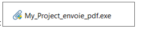
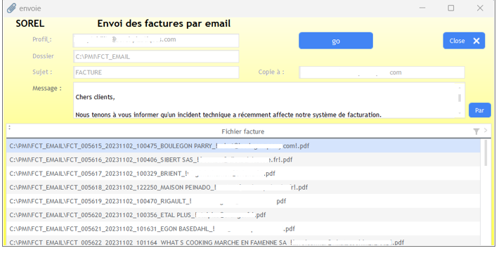
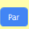
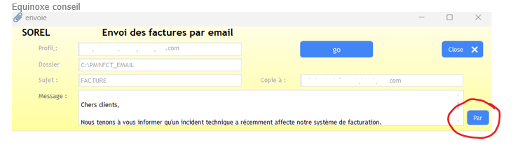
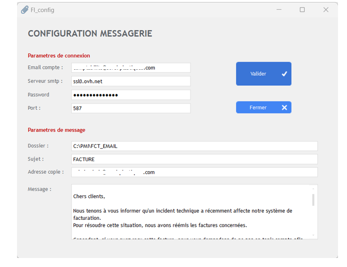
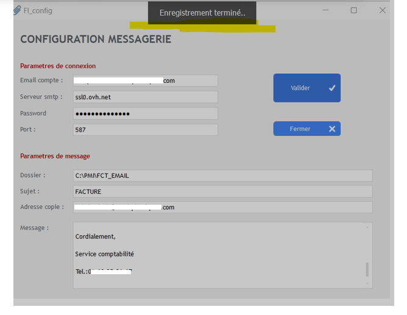

Envoie des factures par email
Fait par Adlen Souci
Pour les entreprises SOREL / BEREL
Objectif
Envoyer des fichiers au format PDF par courriel.
Les fichiers sont des factures émises par l’entreprise.
Les fichiers sont au préalable stockés dans un dossier.
L'application
Nom de l'application
My_Project_envoie_pdf.exe
Installation de l’application
Aucune particularité, le fichier est à poser dans un dossier au choix.
Il est accompagné d’un fichier de configuration : My_project_envoie_pdf.ini
Et d’un fichier texte contenant le message : message.txt
Le fichier de configuration et le fichier contenant le message sont paramétrables depuis
l’application.
Les 2 fichiers devront être installés dans le même dossier que l’exécutable.
Méthodologie
Lancement de l’application
Le lancement se fera par un double-clic sur l’exécutable :

Icone de l’exécutable ;
Menu principale
Les champs sont pré rempli au chargement de la fenêtre.
Avec :
- Le profil : Adresse de l’expéditeur
- Le dossier : Dossier contenant les fichiers factures à envoyer
- Le sujet : Sujet de l’émail
- Copie à : Adresse mail en copie cachée pour s’assurer que les fichiers sont bien envoyés
- Message : Message du corps de l’email

Le contenu du dossier des factures est affiché dans la fenêtre.
4.3 Structure du fichier facture
Le nom de chaque fichier PDF est structuré pour avoir un maximum d’informations :
FCT + numéro facture + date de facture + code client + nom du client + !adresse mail !+ .PDF
L’adresse mail en dernière position est encadrée par « ! » pour être captée.
Les fichiers qui ne contiennent pas d’adresse email sont déplacés dans un dossier : « FctSansEmail »
Paramétrages
L’icône (paramètres)
permet de changer les paramètres par défaut
pour le
prochain chargement.
Ces paramètres sont inscrits dans le fichier de configuration (My_project_envoie_pdf.ini).

La fenêtre est composée de 2 parties :
Paramètres de connexion
Paramètres de message

Le clic sur « Valider » va enregistrer les modifications dans le fichier de configuration et le
fichier message.txt pour le message du corps de l’email.

Envoie des factures
Le clic sur « » va envoyer chaque fichier PDF à l’adresse indiquée dans le
fichier.
A chaque envoie d’un fichier, ce dernier est déplacé dans le dossier « SAUVE » pour archivage.